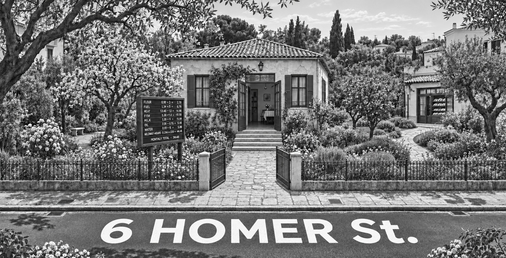

Preface · How It Came About
It did not happen in a day. People say it did, because of the date. But it had been cooking for fifty years; the day only made it visible.
I will tell you what Greece was like before. Not the Greece of the postcards — the blue doors, the white walls, the sea. The other one. The one we lived in, and the one most people still live in.
*
Let us start with the parties.
For fifty years, since the fall of the junta in 1974, two or three big parties took turns at running the country. Every four years or so they changed places, the way two people change places on a bench. The faces changed a little. The surnames did not. The same families sent their sons to Parliament, and their grandsons, and now their great-grandsons. The prime minister's son became prime minister. The minister's nephew became a minister. The cousin of a party leader's wife became the head of a public company that lost a hundred million euros a year, and kept his job — because who would fire the cousin of the chief grifter?
We had a word for it: rousfeti. The word was not even Greek. It came from the Ottomans: rüşvet, a bribe.
The steppes of Mongolia never had the chance to learn anything from ancient Greek civilization. There, people traded in horses and women. In ancient Greece, people were thinking about Euthyphro, who believed that even a slave, a man with no standing at all, had the same right to justice as everyone else; in other words, he was a forerunner of human rights. But Euthyphro had been forgotten, at least east of Italy.
Two thousand years after Euthyphro, the Ottomans were still living in the dark. The ancient Greeks spread light; the Ottomans spread stupidity and shame on the human race. Their trademark was snatching small children from their mothers' arms, to end up either as janissaries or in the harems (devşirme = the child levy). Even today, this practice is regarded as glory. There is no glory in Ottoman history, only shame and stupidity.
So the Ottoman curse has not been forgotten yet. It keeps Greece at least a hundred years behind Denmark. Four hundred years under the Sultan had taught us that nothing good comes from the state, except through a favor from the right person. Two hundred years of our own state were not enough to unlearn it. We only changed the person; now he was not an Ottoman, but a Greek.
A favor. You vote for the party; the party finds your son a job in the tax office, or at the electricity company, or at the water company, or at the town hall. It does not matter whether there is any particular work for him to do. It does not matter whether your son can do it. What matters is that he votes, and his wife votes, and his children vote, for as long as the job lasts — that is, forever.
So every government that came in hired its own people. And it could not fire the people of the government before, because the law protected them. So the offices filled up, one government after another, like a house where nobody ever throws anything away.
*
I call it uselessnessocracy: the rule of the useless.
Here is how it works. You need an official paper — to open a shop, to build a wall, to register a birth, to get your pension. You go to an office. The office has forty employees. Thirty-eight of them are not there, or are drinking coffee, or are on the phone to their cousins. The other two tell you that you need another paper, from another office, at the other end of town, which closed at one o'clock. It is a quarter to one.
When you finally have all the papers — eleven stamps, sometimes more — you go back, and the person who has to sign them is on leave; or would sign next week; or would sign today, if you understood. And you understood. Everybody understood.
That was the fakelaki, the little envelope. You put it in his drawer, or under a file on his desk, or in the pocket of his jacket on the back of the chair. Nobody opens it in front of you. There is no need for anyone to open it.
The fakelaki is everywhere. You give one to the surgeon before the operation, or else the operation will be in four months. You give one to the inspector, or else your restaurant does not pass the inspection. You give one to the clerk at the planning office, or else your house is illegal; and then you give a bigger one, and your house becomes legal. Half the houses in Attica have been built without a permit and made legal afterwards, every few years, in a big amnesty before the elections. The fakelaki is not a crime. It is a tax. The only tax that everyone pays.
*
I also call it dronocracy: the rule of the drones.
In a beehive, the drones do not make honey. They eat it. That is what we call them, kifines, drones, and everyone knows who they are: the party hacks in the public companies, the advisers to the advisers, the members of boards that never meet, the special secretaries of special secretariats. They have cars with drivers, phones they do not pay for, and a pension at fifty-five. The worker bees — the nurse, the bus driver, the waiter, the farmer, apart from some farmers — make the honey, and the drones eat it, and the hive gets poorer every year, and everyone understands why.
You do not have to go to a ministry to see them. They are in every kafeneio, that is, traditional café, in every neighborhood — in Neo Psychiko too. In Neo Psychiko, one in four people between thirty and sixty is a hardened lamogio, a grifter, a dull-witted drone for life. People who are paid three thousand euros a month by the state for a job nobody ever sees them do sit all morning over tavli, that is, backgammon, and coffee, slamming the pieces down, while at the next table another man, who breaks his back from six in the morning at a Sklavenitis supermarket for six hundred euros a month, drinks his coffee standing up because his back hurts too much to sit. Everyone knows who the drones are. Everyone knows whose cousin got them the job. And everyone keeps quiet because they are exhausted, because they know the neighborhood is full of informers, and because they fear they will have trouble getting their pension, their son's papers, or anything else. But the worst of it is that the drones feel no shame. None. Not in front of the man with the broken back, not in front of anyone. They have no respect for their fellow citizens because they do not think of them as fellow citizens at all. Idiōtai to the bone, that is, totally indifferent to what happens to their fellow citizens: nothing exists for them outside their own pockets. Boors through and through — not by birth, but in mind and soul.
Above the drones are the queens. Not one queen — a few dozen families. Shipping, construction, banks, television. They own the channels that tell you what to think about the parties, and the parties write the laws that tell you how to fill the pockets of the well-known families. The money goes around and around, among the same few hundred or few thousand people, while the rest of us stand outside the circle and watch the same show again and again.
*
And under all of it, the thugs.
Every party has its youth wing, and some youth wings are neither young nor interested in politics. They are men with thick necks whom you can send to a rally, to a strike, or to the offices of a newspaper. The football clubs have their hooligans, and the hooligans have friends in the parties, and the friends have friends in the police.
Drugs are sold in the open, in Omonia, in Exarchia, in Menidi, in the squares where everybody walks. The police know the dealers by name. Everyone knows the police know. Boys of fifteen start on pills and end on heroin. Every year more of them die in the doorway of some block of flats, and every year a minister says on television that the problem is being dealt with.
We all saw it getting worse.
Everyone knew that phones were being tapped — the phones of journalists, of judges, of people in the opposition, even of ministers — those few who had not yet turned into grifters themselves. When the people who had been tapped illegally came to power, they would do the same to others. Such stupidity. In the end it came out that the intelligence service, the EYP, had been doing it, and that spyware, bought from a private company founded by a former Israeli intelligence officer, had been put on the phones of people who had done nothing except ask questions. A committee was set up. The committee found that nobody was responsible.
Everyone knew that the people who listened and the people who sold drugs and guns and women knew each other. Everyone knew that some case files went missing, some investigations stopped, and some witnesses changed their minds. A journalist who wrote about organized crime was shot dead outside his house, in broad daylight, in a quiet suburb. Nobody was ever convicted. People stopped asking questions on the phone. Then they stopped asking questions at all.
That was the fear. Not tanks in the streets, as in 1967. Something quieter. The feeling that somebody was always listening, and that this somebody was not on your side.
And the belief that Mykonos and Santorini were being plundered by gangs whose members included government officials, civil servants, and people from organized crime. But what am I saying? You cannot separate the two. Government officials and civil servants are organized crime.
*
And under the fear, the ever faster ruin of everyday life.
Wages were five hundred euros a month, six hundred, seven hundred if you were lucky. A young man doing his national service, guarding the borders of his country, was paid about five euros a month. In Portugal, a young soldier was paid nine hundred. Rent in Athens was half the wage, and then more than half. Young people with two degrees lived with their parents until they were thirty-five, and then they left. Half a million left in ten years — doctors, engineers, nurses, programmers — for London, Berlin, Amsterdam, for anywhere that paid for work and not for a show of loyalty. Greece lost its best. Their parents raised them and gave them away to other societies.
The hospitals had camp beds in the corridors. The ambulances came late, when they came. The schools taught children to memorize, not to think, and every family that could pay sent its children to private evening classes, to learn in the afternoon how to parrot things more cheerfully than the school had taught them to in the morning. A family spent more on that than on food.
Nobody wanted to do military service. Some declared themselves drug addicts, some mentally ill, and some whatever else occurred to them. There was great insecurity because they knew that, on their rare days of leave, they would not be able to afford even a souvlaki. And all this while those with connections went home on leave every day, served next door to their homes, or were posted to some embassy abroad. Some, in fact, did not serve at all, except on paper. And then people say that the greatest danger is Turkey. No, Turkey is not the greatest danger. The greatest danger is the grifters' governments, one after another, and the permanent civil servants, the most corrupt in the European Union.
Then the borders opened, and nobody noticed, except those who allowed it. In 2015 nearly a million people crossed into Greece from Turkey, by boat and on foot — from Syria, Afghanistan, Iraq, Pakistan, most of them Muslims. Most moved on north. Many of those who stayed were never registered. Nobody in Athens could say how many there were, or where, or who. They were packed into camps like Moria, on Lesvos, built for three thousand but holding twenty thousand, and left there for years. Muslim villages appeared out of nowhere. The state neither helped them nor counted them. It only made speeches, for one side or the other, before the elections. And it took the money. The European Union sent hundreds of millions of euros to look after the refugees, and most of it never reached where it should have. It went through non-governmental organizations (NGOs) that existed only on paper, through contracts for food that never reached its destination and tents that were never put up, and through a thousand other tricks and schemes. Some of the money went to politicians in other European countries, to keep them quiet. Everyone knew the game. Let the refugees through. Ask for huge sums to look after them. Leave them to their fate. Keep the money.
The villages emptied. The islands emptied in winter. Every year fewer children were born; every year more people died than were born. A country of ten million people was getting smaller, older and sadder, and those who ran it were getting richer.
And Athens lives on top of its own garbage. Five million people, and almost nothing is sorted, recycled or treated. It is all loaded onto trucks for the hills at Ano Liosia and Zefyri, on the western edge of the city, and it was dumped, and is still dumped, in the open, year after year, for forty years — tens of millions of tons. Athens is the only capital in Europe that does this. The European Union fined Greece, again and again, and Greece pays the fines with European money and goes on dumping. The whole Athens basin breathes it, especially when the west wind blows. Many people all over the basin get cancer; every family has someone. And above the piles, every day, hundreds of thousands of gulls, crows and pigeons circle, eating whatever is rotting there, and then fly over the roofs, the playgrounds and the water tanks of Athens, carrying it with them.
And then the disasters came, one after another, and each one showed the same thing.
In July 2018 a fire came down the hill into Mati, a seaside town east of Athens, in the afternoon, with the wind behind it. The roads were narrow and full of cars, because the houses had been built without a plan and the plan had been made legal afterwards. No evacuation order was given. More than a hundred people were burned alive — in their cars, in their gardens, on the beach, in the sea where they had run to escape. Some were found holding each other. Not one party hack resigned before the bodies had been counted.
Every summer the fires grew in number, and most of them were arson. Some were started by angry people who wanted to hurt somebody and did not care whom. Some by psychopaths who liked to watch. Some by lamogia, grifters who wanted a forest to burn so that it would stop being a forest and become a plot to build on and sell. Some by agents of neighboring countries. Some by refugees who had nothing left to lose and held a grudge against the country that had left them in a camp. The police arrested a few every year. The fires came back every year. The firebreaks had never been cleared, and the money for all of it had ended up in the pockets of the crafty.
Then came the floods, which drowned towns because houses had been built over the streams, with permits. And then came the night when two trains met head-on on a single track, and fifty-seven people died, most of them students going home after a holiday — on a line where the signaling had not worked for years, although everyone in charge had been warned, again and again, in writing.
After the trains, something changed. Not in the parties. In the people. Tens of thousands filled the squares, all over Greece, with banners. The banners did not name a party. Most of them carried one sentence, the one every Greek parent says to their child at the door: Text me when you get there.
And then there were the children. In the last ten years leading up to 2024, the news began to bring stories nobody had heard before. Primary-school pupils stabbing other pupils. Children of eleven and twelve selling drugs at the school gates, and others buying them. Girls of ten fighting in the street and dragging each other by the hair along the pavement, while other children filmed it on their phones and uploaded it to the internet. Every time, a minister said it was an isolated incident. Every time, it happened again a few weeks later, somewhere else.
Domestic violence began to take on new dimensions. Every so often, a husband would kill his wife. Sexual abuse within the same family, including the abuse of children, was no longer rare. People drugged others, both inside and outside the family, in order to sexually abuse them. Every so often, bodies were found in the mountains, on beaches, or in suitcases. Greece is turning into the Mexico of the European Union. This is what the grifters have reduced the country to.
A country can live for a long time with envelopes, with drones, with fires and with trains without signaling. It cannot live with this. For many families, the children and domestic violence were the last straw that broke the camel's back.
*
I want to name one more thing, the one that held all the others up. I call it idiotocracy.
I do not mean that people were stupid. They were not. The ancient Greeks had a word, ἰδιώτης (idiōtēs): the private person, the one who looks after only his own household and leaves the city to others. That is what we have all become. Every family was a small, sealed town — its own restaurant, its own laundromat, its own ironing service, its own taxi, its own problems. Every evening, after work, the mother cooked and washed and ironed, while the father fixed whatever had broken. Nobody had time for the city. So the city was left to the drones, to the thugs of the night, and to the families with the television channels.
We were not ruled by the worst among us for no reason. We were ruled by whoever had time while the rest of us were ironing.
*
For years I talked about all this at café tables in Neo Psychiko, and elsewhere. At 6 Homer Street, in Neo Psychiko, in the house where I grew up, my mother used to tell me, when I was twelve, that I would never amount to anything if I kept arguing with teachers. I kept arguing — with priests, with professors, with ministers' advisers, with judges who had three holiday homes, and with anyone who used a word and could not tell me what it meant. With all the parrots.
Ask a politician what democracy means, and he will tell you it is what we have. Ask him what we have, and he will tell you democracy. That is a circle. A circle is not a definition. You cannot build a country on a circle. We had tried, for two hundred years.
So I wrote down what I believe a demos should be. A place with no rulers and no representatives, where nobody decides for anybody else; where the bread is divided by arithmetic that anyone can check, not by somebody behind a desk; where everyone works four hours and then the time is their own; where nothing that affects anyone's quality of life is hidden; where every word that matters is defined, and every definition can be challenged. I called this way of governing prosopocracy — the rule of persons. Not of parties, not of families, not of flags. Of persons, each one, face to face. I put it all on a website, prosopocracy.com, and some people read it, and most people laughed.
*
Then, in the autumn of 2023, the government did something nobody expected.
It had lost the young, the squares had filled up again, and the polls were the worst in fifty years. Every party was hated, and every party knew it. In a debate that lasted three nights, Parliament amended the constitution. From then on, every demos, and every community within a demos, could choose its own form of government, as it wished — on one condition. At least sixty percent of its citizens had to agree.
The ministers called it a great reform. In traditional cafés, people called it a safety valve: let the angry ones believe they can change something, and they will never reach sixty percent on anything. Most Greeks cannot agree, even if sixty percent of them are asked to choose the goalkeeper of the national football team.
They were right about most places. They were wrong about one.
*
Neo Psychiko is a small place: fourteen thousand people, officially a community within the demos, that is, the municipality of Filothei–Psychiko. I had lived there most of my life. People knew me as the one who argued with everybody. Some of them had sat with me at café tables and agreed with me for years before we ever talked about it.
In December 2023, some of them came back. A baker I had shared a school desk with. A carpenter. A cook. A programmer who had read the whole website twice and had found three mistakes. A butcher. A doctor. They did not come to tell me they had changed their minds. They came to say they were ready.
We did it the way the website said. First, a petition, signed by more than one fifth of the community, asking for an exam. Then the exam: every citizen over seventeen could take it, online, whenever they liked, within two weeks in February. Not a vote. An exam. If you passed, you proved two things — that you understood prosopocracy, and that you wanted to live in it. Anyone who did not want it could fail on purpose, and nobody would ever know.
The exam closed at midnight on the twenty-eighth of February 2024.
*
I woke on the twenty-ninth — a day that comes only once every four years — at five in the morning, because the phone was ringing. It was not about the exam.
During the night, Israel had dropped tactical nuclear weapons on Iran.
I will not describe what the television showed. Anyone alive remembers it. By seven there were queues at every petrol station in Athens. By nine, the supermarkets had run out of water, rice, flour and batteries. The banks shut their doors. The cash machines ran dry. The ships stopped. The government went on television, the ministers one after another, and said there was no reason to panic — which is what governments say when panic has already taken over.
The people of Neo Psychiko did not go to the supermarkets. They came to Homer Street.
By ten in the morning three hundred people had gathered in the street outside my house, and more were coming. Nobody had called them. They stood there in the cold, in their coats, not saying much. Some were crying. Some held their phones and waited. They all knew the exam had closed at midnight. They all knew the result would come out that morning.
It came out at a quarter to twelve. The programmer read it out from the step, because her voice was louder than mine.
Citizens over seventeen: 11,904. Passed: 7,380. 62 percent.
Nobody cheered. That is what I remember more than anything else. Out in the world the worst thing in eighty years had just happened, and in our little street three hundred people stood still, and then the baker said, "Well. Somebody has to weigh the flour."
And we weighed it. That afternoon, while the television showed the end of the world, we weighed every sack of flour in every bakery in Neo Psychiko, and measured every liter of fuel, and counted every box of medicine in every pharmacy, divided them by fourteen thousand, and put the numbers on a board outside my house, so that anyone could check them. Nobody in Neo Psychiko stood in a queue for anything that week. Nobody stored anything away. There was nothing to store. Everything was on the board.
That evening, the cross from the church on Agia Sofia Square was removed, and the building became a home for the elderly, with the citizens' agreement. The next day, the cars began to disappear. Within a month, the kitchens had gone too, the first restaurants were feeding everyone, and the first four-hour shifts had begun. Those who wanted none of it left, and we helped them carry their furniture too.
Then the homes. The interior of every house and every flat in Neo Psychiko was redesigned, where necessary, room by room, so that each person had at least twenty-five square meters — enough for one person to live well. Everything inside was frugal, and everything was of the best quality: a good bed, a good mattress, good seats, good lighting, doors that closed properly. The kitchens became other rooms — studies, workshops, music rooms, rooms for a grandmother. Private space became small and good. Public space became large and excellent: the restaurants, the baths, the professional periptera of the trades, the libraries, the gardens, the streets without cars. That was the exchange. A little less for each of us at home, and a great deal more for everyone in public spaces.
And with that exchange, the boorish spirit began to disappear. A person who no longer spends every evening shut in a private kitchen, cooking, washing and ironing, has time for the city. The Greeks had a word for the person who belongs to the city and takes part in it: dēmotēs. That is what we began to become. No longer idiōtai, but dēmotai: participating citizens.
*
That was the twenty-ninth of February 2024. People say prosopocracy was born out of the bombs. It was not. It was born out of fifty years of envelopes, and favors, and drones, and thugs, and phones that somebody was secretly listening to, and children who left, and trains without signaling, and drug addicts, living or dead. The bombs only made everyone look up at the same moment.
This book begins two and a half years later, when the foreign journalists began arriving in numbers to see what we had done. It is not the story of a perfect place. There is no such place. It is the story of a place where, when something goes wrong, everybody sees it, and somebody has to say so, with their name.
I live at 6 Homer Street. The door is open. Come and talk — and argue, until the Socratic dialectics leads us to the answer.
— Σιδέρης · Sideris